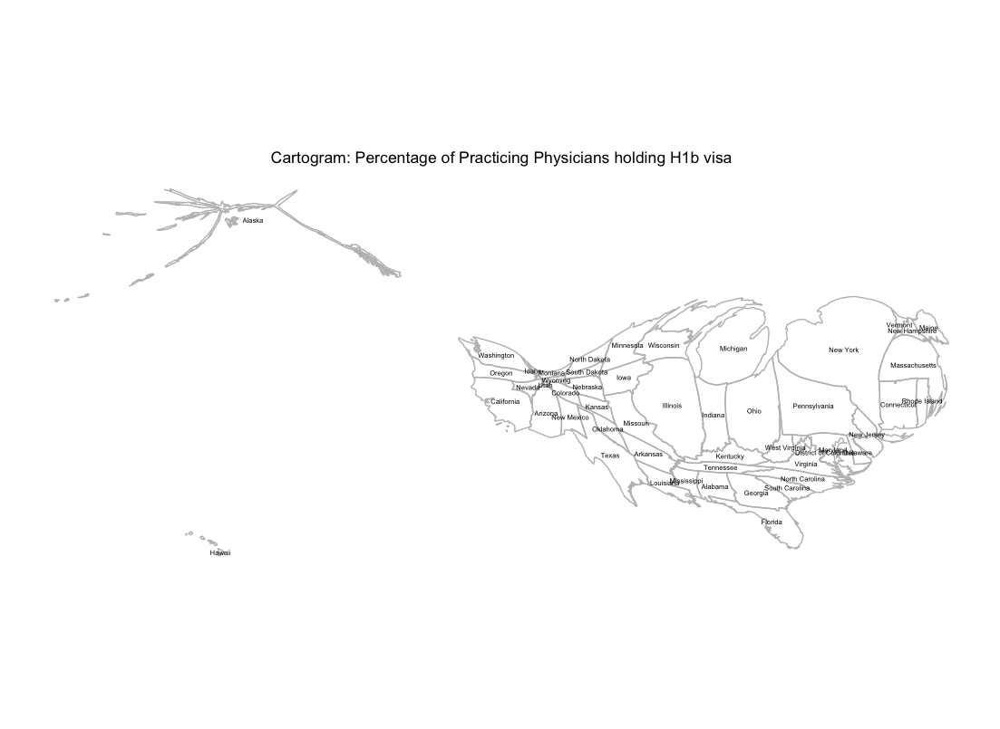

It might seem like long time ago now, but a few months ago, the Trump administration’s attempt to ban immigrants from 6 muslim majority countries dominated the media cycle. The ban impacted people from all different walks of life, but physicians were given some special attention as there is not insignificant foreign physician workforce in the US, including 7000 from Iran, Libya, Somalia, Sudan, Syria and Yemen.
In April, Peter Kahn and Tova Gardin published a Research Letter in the Journal of the American Medical Association (JAMA). The article includes a table of number and percent of active physicians holding H1B visas. A few things surprised me in the map.
When I saw the data, I thought it would make an interesting cartogram, a type of map that weighs the geographic area by the data instead of land mass.

Two things surprised me in the cartogram/data:
- H1B holding physicians are predominantly in the midwest, with an outsized number in Michigan, Ohio, and Illinois.
- The Southwest and Mountain west has virtually no H1B holding physicians